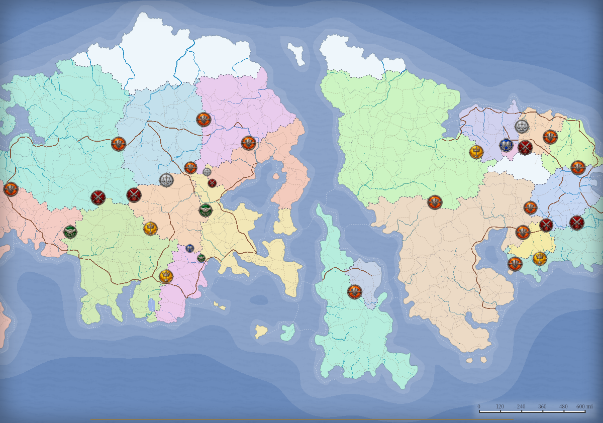

PLANET BUILDER / MOBILE WORKSPACE · PROPOSAL 01
지도를 만들고 다듬는 모바일 작업실
우선순위: 세계 생성·편집 → 탐색·설정 → GM 진행
화면
휴대폰 세로 · 390×844
작은 화면 · 320×568
휴대폰 가로 · 844×390
태블릿 · 820×1040
처음으로
테라온
로컬 복구 있음 · 예시
저장
GM 보기 · 비밀 장치 표시 중

지상
표시
페로오 대공국
지역 지도 · 지명 표시 예시
페로오 · 2
100 km
지도를 움직여 위치를 정하세요
선택 위치: X 128 · Y 84 (예시)
지도
편집
생성
세계
취소
설정
적용